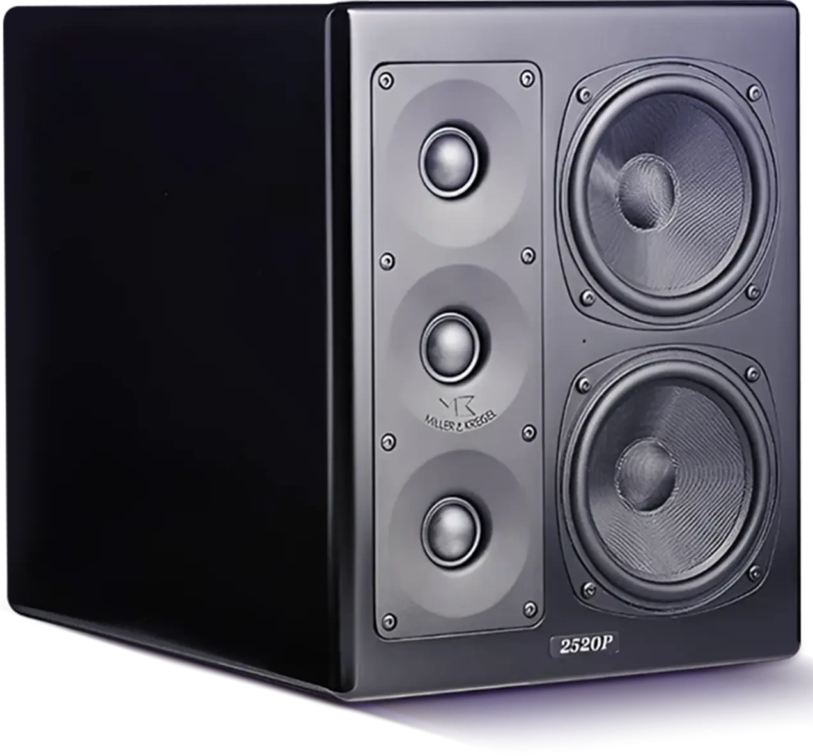
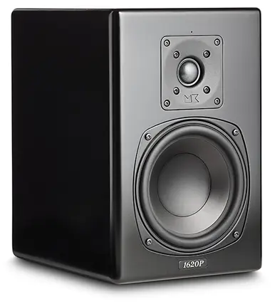

Самые известные в мире музыканты, певцы, продюсеры, режиссёры и
инженеры, работающие в сотнях кино, музыкальных, вещательных и
постпродакшн-студиях по всему миру, выбирают акустистические
системы M&K Sound.

M&K Sound используют
лучшие кинематографисты,
в том числе:
Warner Bros.
20th Century Fox.
Universal
Paramount
Dolby Labs
Sony Music
Lucas Film
THX
Disney
Skywalker Sound
HBO
Dreamworks
DTS
Премия за лучший звук
за лучший звук
Фильмы, получившие премию «Оскар» за звук — все они
были сведены и смонтированы на динамиках
M&K Sound
Властелин колец
Перл Харбор
Пираты карибского моря.
Проклятие черной жемчужины
Звездные войны. Эпизод 1
Звездные войны. Эпизод 2
Звездные войны. Эпизод 3
Кинг-Конг
Чикаго
Суперсемейка
Падение чёрного ястреба
Wall.E
Студийные мониторы M&K Sound

MPS1620P
Студийный монитор MPS 1620P оснащён длинноходным 6,5-дюймовым
динамиком и 1-дюймовым купольным высокочастотным динамиком с
низким уровнем сжатия, обеспечивающим впечатляющий звук для
«звуковых постановок» с высоким разрешением.
Двухканальные усилители мощности обеспечивают точную работу низко-
и среднечастотных, а также высокочастотных секций и полный
контроль над динамикой сигнала. MPS1620P может работать как в
закрытом, так и в открытом корпусе благодаря съёмной «системе
заглушек портов» на задней панели динамика. При работе с
сабвуфером выбор конфигурации с закрытым корпусом и фильтром,
установленным в положение «нормальный», обеспечит классическую
конфигурацию кроссовера M&K Sound для сабвуфера и сателлитов, а
при использовании MPS1620P в качестве автономного монитора
конфигурация с портом и фильтром, установленным в положение
«полнодиапазонный», расширит диапазон низких частот и обеспечит
точную «широкополосную» реакцию для применения в качестве монитора
ближнего поля. MPS1620P — это гибкий высокоточный студийный
монитор, который можно использовать для эталонных записей,
редактирования, обработки и мастеринга в музыкальных и
кинопроектах.
Цена по запросу (₽)
Не нужно много времени, чтобы понять, что это очень круто и, прежде
всего, серьёзно.
Журнал Hemmabio (Домашний кинотеатр)
Швеция, май 2016
MPS2520P
Студийные мониторы MPS2520P оснащены в общей сложности 5
динамиками, обеспечивающими впечатляющий звук в ультракомпактном
формате.
Двузканальные усилители мощности обеспечивают точную
работу низко- и среднечастотных, а также высокочастотных секций
и полный контроль над динамикой сигнала 5,25-дюймовые низко- и
среднечастотные динамики настроены для работы в закрытом корпусе
с коэффициентом Q 0,707, что обеспечивает абсолютно оптимальное
управление переходными процессами в системе. В сочетании с
тройными высокочастотными динамиками, работающими на частоте до
1,2 кГц, звуковая характеристика MPS2520P становится быстрой и
чёткой, с превосходными качествами для контроля эталонных
записей, редактирования, обработки и мастеринга для музыкальных
и кинопроизведений. MPS2520P предназначены для простой настройки
системы с помощью встроенного фильтра высоких частот для плавной
интеграции с сабвуферами M&K.
Цена по запросу (₽)
Когда я занимаюсь проектированием и микшированием звука для
фильмов, очень важно, чтобы я мог слышать каждую деталь и нюанс
записанного звука. Когда проектирование звука завершено, я должен
быть уверен, что звук будет воспроизводиться точно и без искажений
на любой акустической системе. Я получаю такую гарантию с
динамиками
Nino Jacobsen
Статьи и обзоры
Давайте рок-н-роллить
Как и любой другой производитель акустических систем для
домашнего кинотеатра, компания Miller & Kreisel тесно связана
с профессиональными студиями звукозаписи. Голливудские фильмы,
а также известные музыкальные альбомы очень часто микшируются
на системах M&K Sound. Это веские причины присмотреться к
активным студийным мониторам MPS2520P и для использования в
Hi-Fi
Майкл Фойгт, 2020
Большие вещи иногда приходят в маленьких упаковках…
или, возможно, просто настоящие профессионалы точно знают, как
раздвинуть границы.
Когда я использовал два монитора M&K в своей домашней
киностудии, мне внезапно стало понятно, почему Lucasfilm
использует эти динамики для микширования. Никакие резкие
перепады громкости, взрывы и сопрано не могли заставить эти
динамики вспотеть. Учитывая их размер, это просто удивительно.
M&K Sound. Это веские
причины присмотреться к активным студийным мониторам MPS2520P
и для использования в
Hi-Fi
Fidelity Magazine.com
Добавьте к своим мониторам
точный глубокий бас
M&K Sound — первые в мире
изобрели активный сабвуфер и сабвуфер с технологией Push Pull с двумя
драйверами
Наши специалисты с радостью проконсультируют вас по любой продукции
M&K Sound
Оставьте заявку для получения консультации
Отправьте заявку на консультацию
по выбору AV-ресивера